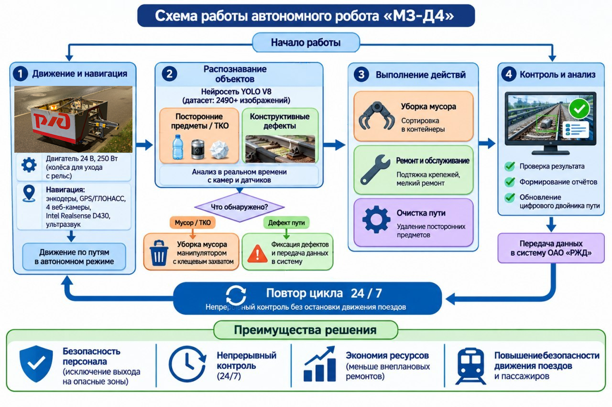
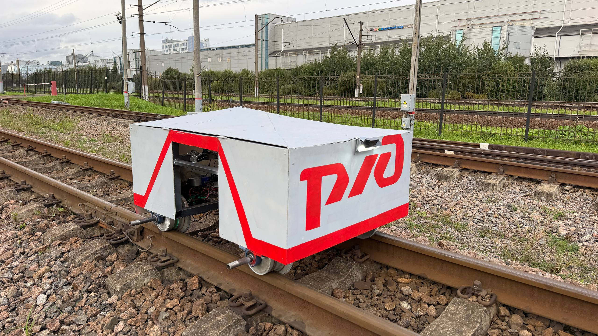
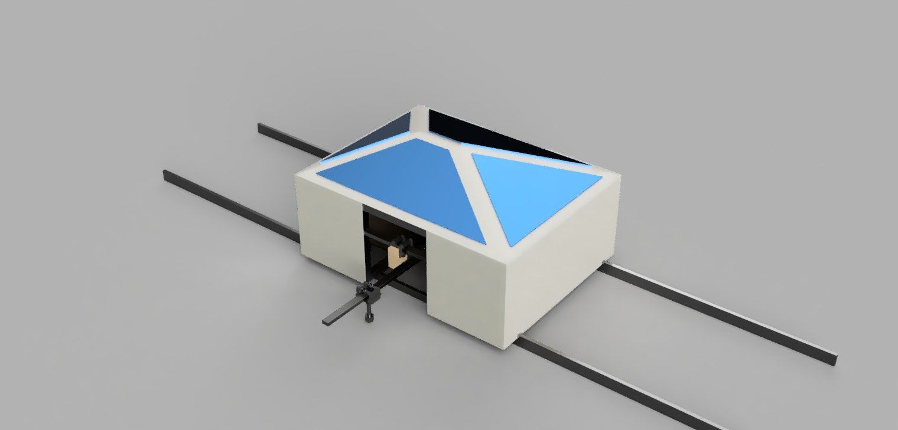
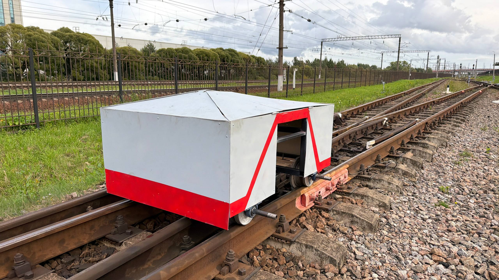
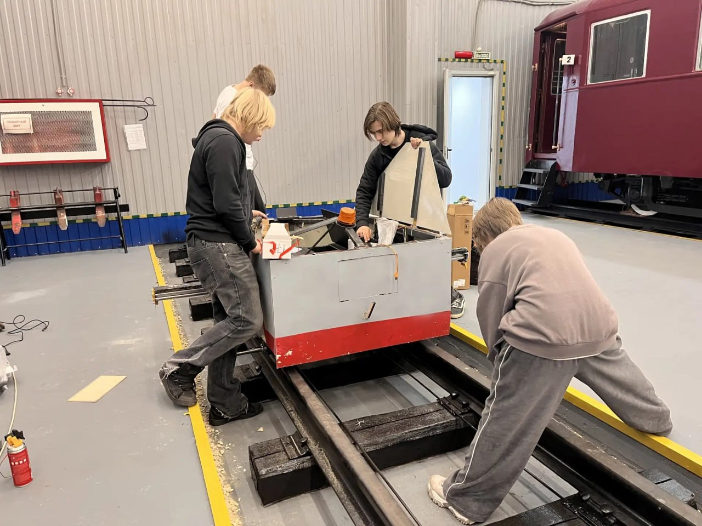

Интеллектуальная система для инспекции, очистки и ремонта железнодорожной инфраструктуры без остановки движения поездов
Автоматическое обнаружение дефектов с помощью нейросети YOLO v8 и лазерных дальномеров
Манипулятор с клещевым захватом удаляет посторонние предметы с путей
Лазерная наплавка выбоин и обслуживание болтовых соединений гайковёртом
Встроенный дрон для обследования труднодоступных мест инфраструктуры
Формирование 3D-карты пути и отслеживание динамики дефектов во времени
До 39 часов работы без подзарядки, автоматический возврат на базу


к проекту автономного робототехнического комплекса МЗ-Д4 для автоматизированной инспекции, очистки и ремонта железнодорожной инфраструктуры
Робототехнический комплекс МЗ-Д4 предназначен для автоматизации процессов осмотра, диагностики и обслуживания объектов железнодорожной инфраструктуры ОАО «РЖД», включая элементы верхнего строения пути (рельсы, шпалы, скрепления), инженерные сооружения (мосты, тоннели, опорные конструкции), подвижной состав (грузовые и пассажирские вагоны, локомотивы), а также труднодоступные и опасные для человека места.
Устройство работает на перегонах, станциях и в депо в режиме круглосуточной эксплуатации, выполняя автоматическую диагностику пути и обнаружение дефектов, уборку посторонних предметов и твёрдых коммунальных отходов, маркировку дефектных участков, обслуживание болтовых соединений, лазерный ремонт выбоин методом трёхмерной печати металлом, а также воздушную инспекцию труднодоступных объектов с помощью встроенного дрона.
Минимизация участия человека в процессах осмотра и обслуживания железнодорожной инфраструктуры, повышение безопасности персонала, объективности контроля и регулярности диагностики при одновременном снижении эксплуатационных расходов.
Ежедневный осмотр железнодорожных путей критически зависит от ручного труда, что сопряжено с рядом серьёзных проблем.
| Проблема | Последствия |
|---|---|
| Опасность для персонала | Десятки травм и гибелей ежегодно при выходе на путь |
| Человеческий фактор | Усталость приводит к пропуску 30–40% скрытых дефектов |
| Трудоёмкость | До 4 часов на 1 км пути при ручном обходе |
| Задержки поездов | Необходимость замедления или остановки движения при работах |
| Высокие затраты | 250 000 руб./год на обслуживание 1 км пути ручным трудом |
Робот МЗ-Д4 работает непосредственно в процессе непрерывного движения поездов, на перегонных участках, станциях и в депо, в температурном диапазоне от −20°C до +50°C, при влажности до 90% и запылённости средней интенсивности.
| Характеристика | Ручной труд | «Декарт» | NLB-500 | МЗ-Д4 |
|---|---|---|---|---|
| Метод контроля | Визуальный осмотр | Ультразвук (99,8%) | Компьютерное зрение (97,8%) | YOLO v8 + лидары (81,8%) |
| Геопозиция | Ручная запись | GPS/GLONASS | GPS-метки | GPS/ГЛОНАСС + энкодеры |
| Производительность | 0,5–1 км/смену | До 1000 км/сутки | 2–3 км/сутки | 15–20 км/сутки |
| Задержка поездов | Риск | 0 минут | 0 минут | 0 минут |
| Функционал | Только осмотр | Только диагностика | Только диагностика | Инспекция + уборка + ремонт |
| Стоимость | 250 тыс./км/год | ~180 млн руб. | Высокая | ~1,77 млн руб. |
| Тип устройства | Комбинированный (наземный робот + воздушный модуль) |
| Способ движения | Колёсный по рельсам с системой аварийного съезда |
| Рабочая скорость | 4,5–5 км/ч |
| Производительность | 15–20 км путей/сутки |
| Рабочая температура | от −20°C до +50°C |
| Степень защиты корпуса | IP58 |
| Основная АКБ | Li-ion, 60 В, 28 А·ч (537,6 Вт·ч) |
| Резервная АКБ | Li-ion, 24 В, 30 А·ч |
| Солнечные панели | Пиковая мощность 128 Вт, выработка до 512 Вт·ч/сутки |
| Автономность — только основная АКБ | 10 ч 45 мин |
| Автономность — основная АКБ + солнце | 21 ч 00 мин |
| Автономность — основная + резервная + солнце | 39 ч 09 мин |
| Основной процессор | Raspberry Pi 4 (4 ГБ) |
| Микроконтроллеры | STM32F407VET6 × 2, Arduino Uno × 3, Arduino Mega × 1 |
| Память | microSD 128 ГБ |
| Номинальный ток | 15 А, пиковый ток: 25 А |
| Компонент | Количество | Назначение |
|---|---|---|
| Веб-камеры USB 1080p | 4 шт. | Детектирование дефектов |
| Камера глубины Intel RealSense D430 | 1 шт. | Контроль зоны перед роботом |
| Лидары | 2 шт. | Лазерное профилирование |
| Ультразвуковые датчики HC-SR04 | 6 шт. | Измерение ширины колеи |
| Платформа | YOLO v8 (обучение на Roboflow) |
| Объём датасета | 2490+ изображений |
| Категории | Посторонние предметы/ТКО и конструктивные дефекты |
| Точность | 81,8% (текущая), цель — 95%+ |
| Ложных срабатываний | 0 |
| Среднее время реакции | 0,3 секунды на объект |
| Тип связи | Стандарт | Назначение |
|---|---|---|
| Wi-Fi | 802.11 b/g/n | до 100 м |
| LTE | Cat.4 | покрытие оператора |
| FRMCS/LTE-R | железнодорожный стандарт | надёжная связь в инфраструктуре РЖД |
| Bluetooth | 4.2 | локальная настройка |
Передача телеметрии: каждые 30 сек (в движении), каждые 3 мин (на стоянке).

Робот построен по модульному принципу:
Полная спецификация комплектующих включает 100 позиций. Итоговая стоимость комплектующих: 419 930 руб. С учётом доставки, таможенных пошлин и резервного фонда 10% — 505 923 руб.

Дата: 18.09.2026. Место: Малая Октябрьская детская железная дорога.
Заложенные дефекты (11 шт.): 4 трещины на рельсе, 2 трещины на шпале, 1 отсутствие болта, 2 из 3 вмятин, 1 неровность, 1 износ (не определён из-за освещения).
| Обнаружено дефектов | 10 из 11 |
| Правильно классифицировано | 10 |
| Ложных срабатываний | 0 |
| Точность классификации | 81,8% |
| Среднее время реакции | 0,3 сек/объект |
| Режим работы | Расчётное время | Фактическое время |
|---|---|---|
| Только основная АКБ | 10 ч 45 мин | 10 ч 38 мин |
| Основная АКБ + солнце | 21 ч 00 мин | 20 ч 45 мин |
| Основная + резервная + солнце | 39 ч 09 мин | 38 ч 50 мин |
| Параметр | Результат |
|---|---|
| Проходимость | Преодоление неровностей без сбоев |
| Герметичность | IP58 подтверждена |
| Термостабильность | Работа в диапазоне температур |
| Устойчивость к вибрации | Без повреждений электроники |
| Статья расходов | Сумма |
|---|---|
| Прототип робота МЗ-Д4 | 505 923 руб. |
| Оборудование мастерской | 591 500 руб. |
| Помещение и ремонт | 325 000 руб. |
| Юридическое оформление | 65 800 руб. |
| Внедрение и сертификация | 3 500 000 руб. |
| ИТОГО CAPEX | 4 988 223 руб. |
| Статья расходов | Сумма |
|---|---|
| Разработка (1-й год) | 5 118 000 руб./год |
| Эксплуатация (со 2-го года) | 3 959 645 руб./год |
| Показатель | ДО внедрения | ПОСЛЕ внедрения | Изменение |
|---|---|---|---|
| Персонал | 8 чел. | 2 чел. | −75% |
| Затраты на персонал | 6 240 000 руб./год | 2 184 000 руб./год | −4 056 000 руб. |
| Материалы и оборудование | 470 000 руб./год | 376 000 руб./год | −94 000 руб. |
| Обслуживание | 0 руб./год | 1 239 645 руб./год | +1 239 645 руб. |
| Прочие затраты | 760 000 руб./год | 425 000 руб./год | −335 000 руб. |
| ИТОГО ЗАТРАТЫ В ГОД | 7 470 000 руб. | 4 224 645 руб. | −3 245 355 руб. |
| Показатель | Значение |
|---|---|
| Чистая экономия в год | 3 245 355 руб. (−43%) |
| Срок окупаемости | 1,54 года (~18,5 месяцев) |
| ROI за 3 года | 195% |
| ROI за 5 лет | 326% |
| Стоимость обслуживания 1 км пути | 250 000 → 27 050 руб./год (−89%) |
| Время уборки 15 км | 16 ч → 6 ч (↓ в 2,7 раза) |
| Простой путей | 72 ч/год → 24 ч/год (↓67%) |
| Риск травматизма | 5% → 0,5% (↓ в 10 раз) |
| Качество уборки | 75% → 95% (↑20%) |
Автономный робототехнический комплекс МЗ-Д4 представляет собой завершённое инженерное решение для автоматизации диагностики, очистки и ремонта железнодорожной инфраструктуры ОАО «РЖД».
Приложения:
| Категория | Сумма | Обоснование |
|---|---|---|
| CAPEX (разовые) | ||
| Прототип робота МЗ-Д4 | 505 923 руб. | Комплектующие + доставка + резерв 10% |
| Оборудование мастерской | 591 500 руб. | Токарный станок, 3D-принтер, сварка, инструмент |
| Помещение и ремонт | 325 000 руб. | Аренда, электрика 380 В, вентиляция |
| Юридическое оформление | 65 800 руб. | ИП, товарный знак, ЭДО с РЖД |
| Внедрение и сертификация | 3 500 000 руб. | Сертификация РЖД, испытания, пилот, интеграция |
| ИТОГО CAPEX | 4 988 223 руб. | |
| OPEX (ежегодные) | ||
| Разработка (1-й год) | 5 118 000 руб./год | Персонал (3 чел.), аренда, обслуживание оборудования |
| Эксплуатация (со 2-го года) | 3 959 645 руб./год | Персонал (2 чел.), ТО робота, амортизация, связь |
| Показатель | ДО (ручной труд, 8 чел.) | ПОСЛЕ (робот + 2 чел.) | Изменение |
|---|---|---|---|
| Затраты на персонал | 6 240 000 руб./год | 2 184 000 руб./год | −4 056 000 руб. |
| Материалы и оборудование | 470 000 руб./год | 376 000 руб./год | −94 000 руб. |
| Обслуживание | 0 руб./год | 1 239 645 руб./год | +1 239 645 руб. |
| Прочие затраты | 760 000 руб./год | 425 000 руб./год | −335 000 руб. |
| ИТОГО ЗАТРАТЫ В ГОД | 7 470 000 руб. | 4 224 645 руб. | −3 245 355 руб. |
| Показатель | Значение |
|---|---|
| Чистая экономия в год | 3 245 355 руб. (−43%) |
| Срок окупаемости | 1,54 года (~18,5 месяцев) |
| ROI за 3 года | 195% (экономия 4,75 млн руб.) |
| ROI за 5 лет | 326% (экономия 11,24 млн руб.) |
| Персонал | 8 чел. → 2 чел. (↓75%) |
| Время уборки 15 км | 16 ч → 6 ч (↓ в 2,7 раза) |
| Простой путей | 72 ч/год → 24 ч/год (↓67%) |
| Риск травматизма | 5% → 0,5% (↓ в 10 раз) |
| Качество уборки | 75% → 95% (↑20%) |
